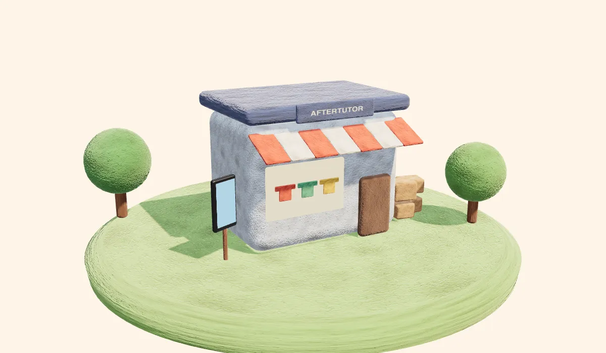

E-commerce · Mobile
Aftertutor
Bewakoof & client work
E-commerce and mobile work, including the Bewakoof site and Play Store apps reaching hundreds of thousands of installs.
What I built
- The Bewakoof e-commerce site.
- Play Store apps reaching 100K+, 50K+, and 10K+ installs.
- IoT work and native then React Native mobile development.
Context
Native mobile in Java, Kotlin and Swift, later React Native. Backend work in PHP/Laravel and Node.
Stack
LaravelReact NativeKotlinNode.js